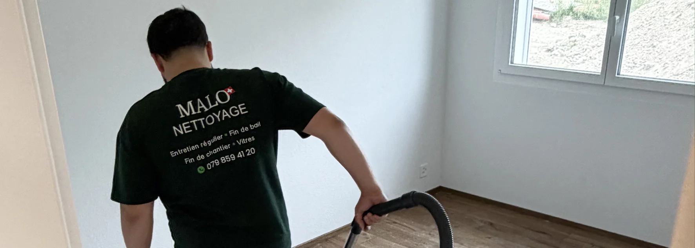

- Basés à Payerne depuis le début, au cœur de la Broye vaudoise
- Deux entreprises, une seule famille : Malo Nettoyage + Malo Débarras (notre frère)
- 64 états des lieux sur 64 validés — garantie retour gratuit sur chaque fin de bail
- Insalubre et extrême : l'un des rares services disponibles en Suisse romande
- Réponse sous 24h, intervention possible sous 48h, y compris le weekend
Une entreprise familiale ancrée dans la Broye
Malo Nettoyage, c'est une histoire de famille. Basés à Payerne depuis le départ, nous connaissons la Broye — ses régies, ses communes, ses habitants — comme peu d'entreprises extérieures à la région peuvent le revendiquer.
Notre zone de travail quotidienne couvre la Broye vaudoise (Payerne, Avenches, Moudon, Cudrefin, Grandcour) et la Broye fribourgeoise (Estavayer-le-Lac, Domdidier, Belmont-Broye, Saint-Aubin). Nous intervenons dans les deux cantons sans frais de déplacement supplémentaires.
Ce qui nous distingue d'une grande structure nationale ou d'un prestataire basé à Lausanne ou Fribourg-ville : quand un client nous appelle le samedi matin pour une urgence, c'est nous qui décrochons. Pas un centre d'appel.
Un projet de nettoyage dans la Broye ?
Entreprise familiale à Payerne · Réponse 24h · Broye vaudoise & fribourgeoise
Demander un devis gratuit →Deux entreprises, une seule famille
Nous travaillons en étroite coordination avec Malo Débarras, l'entreprise de notre frère, spécialisée dans le débarras respectueux dans les cantons de Vaud et Fribourg.
Cette organisation fraternelle nous permet de proposer des prestations combinées — débarras et nettoyage coordonnés — avec un seul interlocuteur, un seul planning et une seule facture. C'est particulièrement utile pour les ventes immobilières, les successions, les départs en EMS et les situations insalubres.
Deux entreprises, une seule famille. Un seul interlocuteur pour vous.
Nos services dans la Broye
Voici les prestations que nous proposons au quotidien dans la région.
| Service | Pour qui | Zone couverte |
|---|---|---|
| Nettoyage de fin de bail | Locataires, propriétaires, régies | Toute la Broye VD + FR |
| Nettoyage insalubre et extrême | Familles, propriétaires, régies | Toute la Broye VD + FR |
| Nettoyage de fin de chantier | Constructeurs, artisans, particuliers | Toute la Broye VD + FR |
| Nettoyage de vitres | Particuliers, commerces, PPE | Toute la Broye VD + FR |
| Conciergerie d'immeuble / PPE | Régies, syndics, copropriétés | Broye + Vaud + Fribourg |
| Nettoyage régulier de bureaux | Entreprises, cabinets | Broye + Vaud + Fribourg |
| Débarras et nettoyage combiné | Ventes, successions, décès | Toute la Broye VD + FR |

Comment nous travaillons concrètement
Un devis sous 24h, prix fixe
Nous ne donnons jamais un prix au téléphone sans avoir vu le logement ou reçu des photos. Un bon devis repose sur la réalité du terrain — surface, état, accès, options. Une fois envoyé, le prix est fixe : aucun supplément caché, aucune mauvaise surprise à la facture.
Une équipe que vous reconnaissez
Dans la Broye, nos clients nous croisent au marché de Payerne, à Estavayer, à Domdidier. Ce n'est pas anodin. Travailler avec une équipe locale, c'est travailler avec des gens qui ont leur réputation à défendre dans la région — pas des intervenants anonymes qui repartent après la prestation.
Le weekend et les urgences
Nous répondons le weekend. Pas systématiquement 7j/7 selon les périodes, mais si vous avez une urgence — remise des clés lundi matin, découverte d'un logement insalubre un samedi — nous faisons le maximum pour trouver une solution rapide. C'est une différence concrète par rapport à beaucoup de prestataires.
Le nettoyage insalubre : un service rare dans la région
Peu d'entreprises en Suisse romande proposent réellement ce service. Nous l'avons développé parce que la demande existe, que les situations sont réelles, et que personne ne devrait rester sans réponse face à une telle découverte.
Discrétion totale, véhicules sans marquage si demandé, équipes formées à ces contextes sensibles. Nous intervenons en coordination avec les familles, les régies, et si nécessaire les services sociaux.
Ce que disent nos clients
« J'avais frotté pendant des semaines sans rien obtenir, j'étais inquiet de ne pas réussir avant l'état des lieux. En une matinée, vous avez retrouvé l'état d'origine, merci !! »
« Je n'aurais jamais eu la force de faire ça seul. Vous avez tout pris en charge, je n'ai eu qu'à fermer la porte. »
Ces retours résument bien ce que nous cherchons à apporter : un résultat concret, dans les délais, avec le moins de stress possible pour le client.
Nos engagements dans la Broye
- 64 états des lieux sur 64 validés — garantie retour gratuit écrite sur chaque fin de bail
- Assurance RC Pro AXA — vous êtes couverts en cas d'incident
- 90 % de produits biodégradables — notre engagement écologique au quotidien
- Réponse sous 24h — sur chaque demande de devis, sans exception
- Discrétion totale — en particulier pour les situations sensibles (insalubre, décès, succession)
Notre zone d'intervention précise
Nous intervenons sans frais de déplacement dans un rayon couvrant l'ensemble de la Broye :
Broye vaudoise : Payerne, Avenches, Moudon, Lucens, Cudrefin, Grandcour, Faoug, Corcelles-près-Payerne, Missy, Granges-près-Marnand, Vallamand, Chevroux.
Broye fribourgeoise : Estavayer-le-Lac, Domdidier, Belmont-Broye (Dompierre, Léchelles, Russy), Saint-Aubin (FR), Cheyres-Châbles, Delley-Portalban, Gletterens, Vallon, Cugy (FR), Nuvilly, Sévaz, Lully.
Pour les communes situées hors de cette zone (Fribourg-ville, Yverdon-les-Bains, Lausanne), nous intervenons selon la nature et le volume de la prestation.
FAQ – Malo Nettoyage dans la Broye
Malo Nettoyage est-il vraiment basé dans la Broye ?
Oui. Nous sommes basés à Payerne, chef-lieu du district de la Broye-Vully, depuis le début de notre activité. Ce n'est pas un rattachement administratif — c'est notre zone de travail quotidienne, où nous connaissons les régies, les artisans et les communes.
Quelle est la différence entre Malo Nettoyage et Malo Débarras ?
Ce sont deux entreprises distinctes, dirigées par deux frères. Malo Nettoyage est spécialisée dans le nettoyage professionnel (fin de bail, insalubre, chantier, vitres, bureaux). Malo Débarras est spécialisée dans le débarras respectueux. Ensemble, nous proposons un service coordonné clé en main.
Intervenez-vous le weekend pour les urgences ?
Oui, dans la mesure du possible. Nous ne sommes pas disponibles 7j/7 toute l'année, mais nous faisons le maximum pour répondre aux urgences le weekend — découverte d'un logement insalubre, remise des clés imminente, situation imprévue. C'est l'avantage d'une équipe locale.
Proposez-vous des produits écologiques ?
Oui. Nous utilisons environ 90 % de produits biodégradables pour le nettoyage courant. Les produits professionnels plus forts (pH 0.5 pour le calcaire incrusté, décapants pour sols après rénovation) sont réservés aux cas où l'écologique ne suffit pas.
Comment obtenir un devis pour la Broye ?
Contactez-nous par téléphone, email ou via le formulaire de devis. Nous vous répondons sous 24h avec un devis personnalisé basé sur vos photos ou une visite sur place. Prix fixe, sans surprise.
En résumé
Malo Nettoyage, c'est une entreprise familiale ancrée à Payerne, qui intervient dans toute la Broye avec une équipe locale, des engagements concrets (64/64, garantie retour, RC Pro AXA) et un service insalubre rare en Suisse romande. Deux entreprises, une seule famille — pour que vous n'ayez qu'un seul interlocuteur, quel que soit votre besoin.